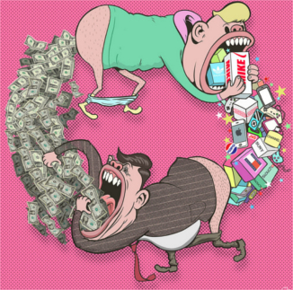
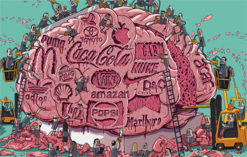
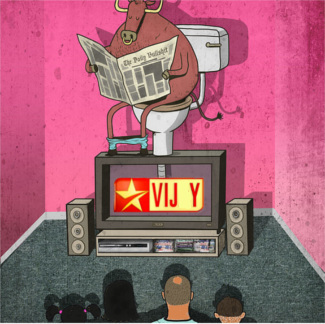
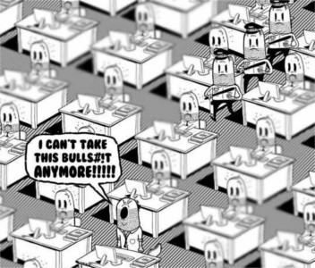

Trusting Trust
An interactive story of trust
loading...
ON
OFF
Trusting
Trust
playing/reading time: 10 min
• By Agnel Vishal
loading...
PLAY →
Here's what happened in the climax of movie “The Dark Knight”.
The villain forces people to two ships. Each ship is given a remote to blow up the other ship.
If both ships do not use the remote, villain will blow both the ships. So kill or be killed.
What will you do in this situation?
Lets see what is the best response by looking at a similar game.
you
cooperate
you
cheat
he
cooperates
he
cheats
you
↙
other player
↘
THE GAME OF TRUST
You have one choice.
In front of you is a machine: if you put a coin in the machine,
the other player gets three coins – and vice versa.
You both can either choose to COOPERATE (put in coin), or CHEAT (don't put in coin).
Let's say the other player cheats, and doesn't put in a coin.
What should you do?
Exactly! Why let opponent take advantage of you?
Sadly, your opponent took advantage of you.
If you cooperate & he cheats, you lose a coin while he gains three. (score: -1 vs +3) However, if you both cheat, neither of you gain or lose anything. (score: 0 vs 0) Therefore: you should CHEAT.
But let's say the other player cooperates, and puts in a coin.
What should you do now?
Wow, that's mean... and also the correct answer!
Sure, seems like the right thing to do... OR IS IT??
Because if you both cooperate, you both give up a coin to gain three. (score: +2 vs +2) But if you cheat & he cooperates, you gain three coins at their cost of one. (score: +3 vs -1) Therefore: you "should" still CHEAT.
And that's our dilemma. Trust is nice, but it can let others pull you down as you try helping them. Sometimes, distrust is rational! But now, what happens if we play this game...
Now, let's play for real. You'll be playing against 5 different opponents, each with their own game "strategy". With each opponent, you'll play anywhere between 2 to 5 rounds. (You won't know in advance when the last round is) Can you trust them? Or rather... can he trust you?
Pick your first, real move. Choose wisely.
opponent: [X] of [Y]
your total score:
And your total score is...
which is, wow, actually impressively bad.
which, uh, could be worse!
which ain't bad!
which is pretty good!
which is perfect! Congrats you have too much time on your hands.
...i have no idea how you did that.
(the lowest & highest possible scores are 9 and 28, respectively)
So who were these strange characters you just played against?
COPYCAT:
Hello! I start with Cooperate, and afterwards, I just copy whatever you did in the last round.
ALWAYS CHEAT: the strong shall eat the weak
ALWAYS COOPERATE: Let's be best friends! <3
RATIONAL
SHERLOCK First: I analyze you. I start with Cooperate and next with Cheat always. If you cheat back, I'll act like Copycat. If you never cheat back, I'll act like Always Cheat, to exploit you.
It's tournament time!
Each character will now play against every other character:
that's 10 paired matches, and 10 rounds per match.
Who do you think will get the highest total score?
Think carefully about it... and then
PLACE YOUR BETS:
Alright, you placed your bet on [CHAR]! Let's go through the matches one by one, and see how the tournament plays out...
first match →
next match →
Match #[N]: [A] vs [B]
Rounds:
Total Scores: [A] vs [B]
As we check individual results, let us in parallel look at our society.

Buying Brands by rotating money.

Our Brains occupied by Brands.
Phone Addiction.

Corporate control education system and culture, making sure no one becomes independent.

Indpendent people create future competitors and hence are destroyed at root.
"Johny Johny Yes Papa" nursery rhymes teaches that if you get caught, have a laughing therapy session to reduce the guilt.
In a very similar story, lord krishna in his childhood eats dirt. When his mother questions him, he denies and confidently opens his mouth. His mother instead of criticising, says she could not see as she became unconscious. She believes in her child more than her eyes.
Similarly when Mother Mary became pregnant without conceiving from Joseph, the society instead of critising her, said it was the work of god. They called the son, a god and he became a god.
Today, does our society trust the same way?
Anyways, the winner of tournament is...
(drumroll please...) →
COPYCAT!
Congrats, you placed your bet on the right horse.
(Apologies to your bet, [CHAR].)
Copycat goes by many names.
tit for tat, or... live and let live.
Copycat doesn't just win the battle, it wins the war.
Copycat can afford to be at peace. Their actions are not the result of their own thinking but of others.
But if things change a lot when you play multiple rounds of the same game, what if we play...
Now, let's let our population of players evolve over time. It's a 3-step dance:
1. PLAY A TOURNAMENT
Let them all play against each other, and tally up their scores.
2. ELIMINATE LOSERS
Get rid of the 5 worst players.
3. REPRODUCE WINNERS
Replace the 5 worst players with 5 best players.
Say we start with the following population of players:
15 Always Cooperates,
5 Always Cheats, and
5 Copycats.
(We'll ignore Rational & Sherlock for now)
We're going to do the tournament-eliminate-reproduce dance a dozen times or so.
Let's make another bet! Who do you think will win the first tournament?
PLACE YOUR BETS, AGAIN:
Makes sense, Always Cooperate outnumbers everyone else right now...
Makes sense, Always Cheat has a lot of Always Cooperates to exploit...
Makes sense, Copycat won the tournament last time, why not again?...
Let's see if you're correct:
1) play tournament
2) eliminate bottom 5
3) reproduce top 5
Alas, Always Cooperate got eaten up by Always Cheat, whose numbers have now increased by 5.
Sadly, you were correct! The Always Cheaters won this time, and their numbers increased by 5.
Alas, Copycat did not win – but at least they didn't do as bad as Always Cooperate. They got eaten up by Always Cheat, whose numbers have now increased by 5.
But let's try a few more rounds of this...
Always Cheat is still growing, at the expense of Always Cooperate...
And now, all the Always Cooperates are dead. But, wait...
That's right: the Always Cheats became a victim of their own success! They exploited the naive Always Cooperators, but once they ran out of them, they had to face the Copycats: who are nice, but not naive.
By simply copying the other player's moves, Copycats can play nice with each other, while Always Cheats just cheat themselves! Not only that, but it also means Copycat can give Always Cheat a taste of their own medicine.
And so, as a result...
...Copycat inherits the earth.
So, although your bet was off -- the nice-but-naive Always Cooperators were doomed from the start -- in the end, a smart form of niceness prevailed, and the Always Cheaters were squashed.
So, in the short run you were right - Always Cheat won the first few rounds, but in the end, its exploitativeness was its downfall.
So, in the long run, you were right - Copycat wins! Always Cheat may have won in the short run, but its exploitativeness was its downfall.
This reminds me of a quote:
"We are punished by our sins, not for them."
~ Elbert Hubbard
(oh, and by the way...)
(...this result is similar even if we put Rational & Sherlock back in:)
start the evolution process!
stop the evolution process
(Note: sometimes, a few Rationals may stick around,
because when all players except Rational & Copycat
are eliminated, the two tie.)
So, it seems the math of game theory is telling us something:
that Copycat's philosophy,
"Do unto others as you would have them do unto you", may be not just a
moral truth, but also a mathematical truth.
However...
...there's a problem: →
If Copycat strategy in this game of trust is so powerful --
that even superpowers in the cold war "evolved" a similar strategy, called "live and let live" --
why, then, did it disturb peace? Why are so many people unhappy with their life copying what others do?
What's causing our epidemic of un-trust where everyone looks for their own selfish goals?
Now lets see from different angle.
So far we've only talked about change in the players:
what about a change in the game?
What could lead to...
...the evolution of distrust?
Before everything goes to chaos, let's start with something nice!
Here's a world filled entirely with Always Cooperates,
except for one Always Cheat and one Copycat.
Use the buttons on the right to START the sim,
go through it step-by-step, or reset it. →
As you already know, Copycat wins handily in the long run,
under our current rules!
But that's under our current rules, which say that
players play against each other for 10 rounds per match.
Does Copycat still win at 7 rounds? 5 rounds? 3? 2? 1?
Change the number of rounds with the slider below,
then START the sim, and see what happens.
Feel free to experiment!
once you're done playing around, click:
As you saw, if you don't play enough rounds, (here: 5 or less)
ALWAYS CHEAT dominates. The fewer "interactions" there are, the more distrust will spread.
In 1985, when people were asked how many deep meaningful friends they had,
the most common answer was "3". In 2004, the most common answer was "0".
Today we do have fun with our friends -- but talks from inside are rare.
How many of us can appreciate the silence in a Mani Ratnam film? Today noise filled Kuppa Padam are more popular.
and oh, it gets worse... →
There's another way to breed distrust. Here are the "rewards and punishments" for the trust game:
With the normal rewards, Copycat wins. But now, change the "both cooperate" reward from +2 to +1, then click START. Even though +1 is still more than the punishment for both cheating (0)... what happens?
feel free to play around with different rewards! once you're done, click:
(simulating: 10 rounds per match)
The same thing happens:
with a lower "win-win" reward, Always Cheat takes over.
We have 2 well known conclusions from this
"Zero-sum game". This is the sadly common belief that a gain for "us"
must come at a loss to "them", and vice versa. Common in sports and war.
"Non-zero-sum game". This is when people make the hard effort
to create a win for all. An example would be a minister making efficient use of money instead of collecting more taxes.
Without the non-zero-sum game, trust cannot evolve.
Speaking of which,
let's now look at our third & final barrier to Trusting Trust...
Misteaks Mistakes. →
As cool as Copycat is, it has a huge, fatal weakness I haven't mentioned yet. To understand the problem, let's say two Copycats are playing against each other:
Being "nice" players, both their first moves will be:
And normally, they'd just pay back each others' kindness and be happy.
But what if, while trying to reciprocate goodness...
OH NO
Mistakes, miscommunication, misinterpretations -- accidents happen all the time in real life.
But if the other person doesn't think it was an accident...
OH NO TIMES TWO
The other player, being a Copycat, had to retaliate...
...and you, being a Copycat as well, will also have to retaliate...
Thus, like the couples who complain the other is not good as in the past these two Copycats will spiral into an endless cycle of revenge... that started over a single mistake, long ago.
Tragic. But now, are there other types of players who can...
...deal with mistakes? →
Let's meet some new faces!
COPYKITTEN:
Hello! I'm like Copycat,
except I Cheat back only after you Cheat me twice in a row.
After all, the first one could be a mistake.
SIMPLETON:
hi, i start cooperate.
if you cooperate back, i do same thing as my last move, even if I made a mistake.
Similarly if you cheat back, i do the opposite.
MONKEY!:
Random
(Just plays Cheat or Cooperate randomly with a 50/50 chance)
Alright, let's see how well these peeps do when they...
...play in a tournament →
Let's start with a dozen
Always Cooperates,
versus our old winner, the fair Copycat,
and our three new characters:
the forgiving Copykitten,
the dull Simpleton, and
the silly Monkey.
In each round of a match, players have a small chance of making a mistake. (let's say, 5%)
Who do you think will come out on top?
Think carefully, then PLACE YOUR BETS:
Alright, you bet [CHAR] wins. Let's find out! Use the controls to your left to START the sim in quick mode, or go through it step-by-step.
You were correct --
Your bet was close, but no cigar --
Simpleton wins! This is because Simpleton is actually capable of exploiting Always Cooperate. They both start cooperating, but if Simpleton makes a mistake and cheats, since Always Cooperate never retaliates, it'll keep cheating them.
Now let's try...
...the same thing as before, except instead of half-Always Cooperate,
it's half-Always Cheat. It's a much less forgiving,
more hostile environment.
Who do you think will win now? Think, then PLACE YOUR BETS:
You bet on [CHAR]. Again, go through the simulation...
You were right on the money --
Good guess, but someone else took the prize --
Copykitten wins this time!
That's surprising that with an even meaner starting population,
Copykitten,
a more forgiving version of Copycat,
was the most successful! (note: Copykitten is so forgiving
it doesn't even entirely wipe out Copycat. it shares room)
In this case, a bit of "miscommunication" (5% chance of mistake each round) could lead
to more forgiveness. But is this true for all levels...
...of miscommunication?
Use the slider below to change the amount of "miscommunication", then hit START. At 5%, Copykitten wins. What happens at 0%? Or 20%? Or 50%? (it only goes up to 50%, because at that point, every move is a coin flip)
When you're done playing around, click:
The results turn out something like this:
At 0%, the fair Copycat wins!
At 1% to 9%, the forgiving Copykitten wins!
At 10% to 49%: the unfair, unforgiving Always Cheat wins.
At 50%, nobody wins ever.
This is why "miscommunication" is such an interesting barrier to trust:
a little bit of it leads to forgiveness,
but too much and it leads to widespread distrust!
The internet has increased our miscommunication much more than than communication...
At last, let's experiment with all peeps, rewards and rules.
Let's play...
...in the Sandbox Mode!
Start off with this distribution of players:
The rewards in a one-on-one game are:
set default
Play [N] rounds per match:
Play [N] round per match:
After each tournament, eliminate the bottom [N] players & reproduce the top [N] players:
After each tournament, eliminate the bottom [N] player & reproduce the top [N] player:
During each round, there's a [N]% chance a player makes a mistake:
NOTE: Feel free to skip it, or play around! Once you're done, let's recap...
what we learnt today! →
Game theory has shown us the three things we need for Trusting Trust:
1. DEEP INTERACTIONS
It is through silence we can listen to the inner self of ourselves and others.
2. POSSIBLE WIN-WINS
We must be playing a non-zero-sum game, a game where it's at least possible that both players can be better -- a win-win.
3. LOW MISCOMMUNICATION
If the level of miscommunication is too high, trust breaks down. But when there's a little bit of miscommunication, it pays to be more forgiving.
Of course, real-world trust is affected by much more than this. There's culture, reputation, money, promises... And let's not forget-
-the biggest lesson. →
If there's one big takeaway
from any of game theory, it's this:
What the game is, defines what the players do.
What the system is, defines what the people do.
In education, politics and business, the game is often about how to cheat.
On a positive note
In the short run, the game defines the players. But in the long run,
it's us players who define the game.
and so...
So Trust trust
<3
Most don't reach here. You deserve a certificate for your patience.
Contact me at:
Mail Id•
LinkedIn•
Facebook•
Diaspn (Open Source alternate to Facebook)
•Source code.
Agnel Vishal
Copycat
copycat
Copycat
Always Cheat
cheater
All Cheat
Always Cooperate
cooperator
All Cooperate
Rational
Rational
Rational
Sherlock
Sherlock
Copykitten
copykitten
Copykitten
Simpleton
simpleton
Simpleton
Monkey
monkey
Monkey
(forgot who's who? Press and hold buttons to see descriptions of each character!)
Starts with Cooperate. Then, it simply repeats whatever YOU did in the last round.
Always cheats.
Always cooperates.
Starts with Cooperate, and keeps cooperating until you cheat it even once. Afterwards, it always plays Cheat.
Starts with: Cooperate, Cheat, Cooperate, Cooperate. Afterwards, if you ever retaliate with a Cheat, it plays like a Copycat. Otherwise, it plays like an Always Cheat.
Starts with Cooperate. Only retaliates with a Cheat if you cheated it TWICE in a row.
Starts with Cooperate. Then, if you cooperated in last round, it repeats its last move (even if it was an accident). But if you cheated in last round, it switches its last move (even if it was an accident).
Randomly cheats or cooperates with 50-50 chance
cooperate
cheat
play
START
STOP
step
reset
population
Rewards
rules
next →
continue
0. Introduction
1. One Game
2. Repeated Game
3. One Tournament
4. Repeated Tournament
5. The Evolution of Distrust
6. Making Mistaeks
7. Sandbox Mode
8. Conclusion
9. Credits